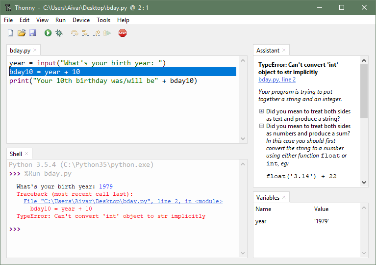

Lower CASE Tools
Alumise taseme CASE-vahendid - teostuse ja koodi genereerimise tugi
Mis on Lower CASE Tools?
Lower CASE (L-CASE) tööriistad on keskendunud tarkvaraarenduse elutsükli (SDLC) hilisematele etappidele, eriti üksikasjalikele projekteerimis-, kodeerimis-, testimis- ja hooldusfaasidele. Nad aitavad koodi genereerida, lähtekoodi hallata ja testimisprotsesse automatiseerida.
Põhifunktsioonid
Koodi genereerimine
Tööriistad, mis genereerivad automaatselt koodi disaini spetsifikatsioonide või mudelite põhjal, vähendades käsitsi kodeerimise pingutusi.
Lähtekoodi haldamine
Versioonikontrolli, muudatuste jälgimise ja mitme arendaja koostöös arendamise tugi.
Silumine ja testimine
Tööriistad, mis aitavad koodi silumist, üksuste testimist ja koodi kvaliteedi analüüsi.
Arenduskeskkonnad
Integreeritud arenduskeskkond (IDE) koos debugging'u, intellisense ja projekti halduse võimalustega.
Minu isiklik kogemus
- Visual Studio Code - kaasaegne koodiredaktor
- IntelliJ IDEA - Java arenduskeskkond
Praktilised näited

Angular
Kirjeldus: Angular (ka Angular 2+) on TypeScriptis kirjutatud avatud lähtekoodil põhinev veebirakenduste raamistik, mis on AngularJS'i järglane.
Peamised erinevused AngularJS'ist:
TypeScript tugi
Angular on kirjutatud TypeScripti jaoks. TypeScript pakub staatilist tüüpimist, mis vähendab testimise vajadust ja arendusaega.
Hierarhiline lähenemine
Angularil ei ole skoopi. Selle asemel kasutatakse hierarhilist lähenemist, kus muutujad pärandatakse edasi objektorienteeritud süsteemi loomiseks.
Modulaarsus
AngularJS'i tuum on jaotatud eraldi mooduliteks. Modulaarsuse eeliseks on kiirem laadimisaeg ja dünaamiline laadimine.
Thonny
Kirjeldus: Thonny on tasuta, avatud lähtekoodiga integreeritud arenduskeskkond (IDE) Pythoni jaoks, mis on suunatud algajatele.
Peamised omadused:
- Erinevad viisid koodi läbimiseks ja analüüsimiseks
- Avaldise hindamise ja visualiseerimise tööriistad
- Lihtne ja kasutajasõbralik kasutajaliides
- Kiire alustamine Pythoni programmeerimisega
- Lihtsad tõrkeotsingu tööriistad
- Hõlpsasti ligipääsetav õppekeskkondadele
Hariduslik väärtus: Thonny on saanud palju positiivset tagasisidet Pythoni ja arvutiteaduse hariduse kogukondadelt. See aitab õpilastel kiiresti omandada programmeerimise alusteadmisi ja muudab vigade leidmise ning parandamise hõlpsaks.
